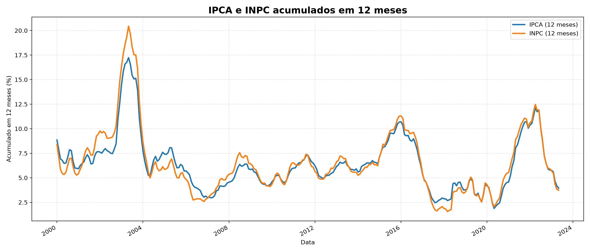
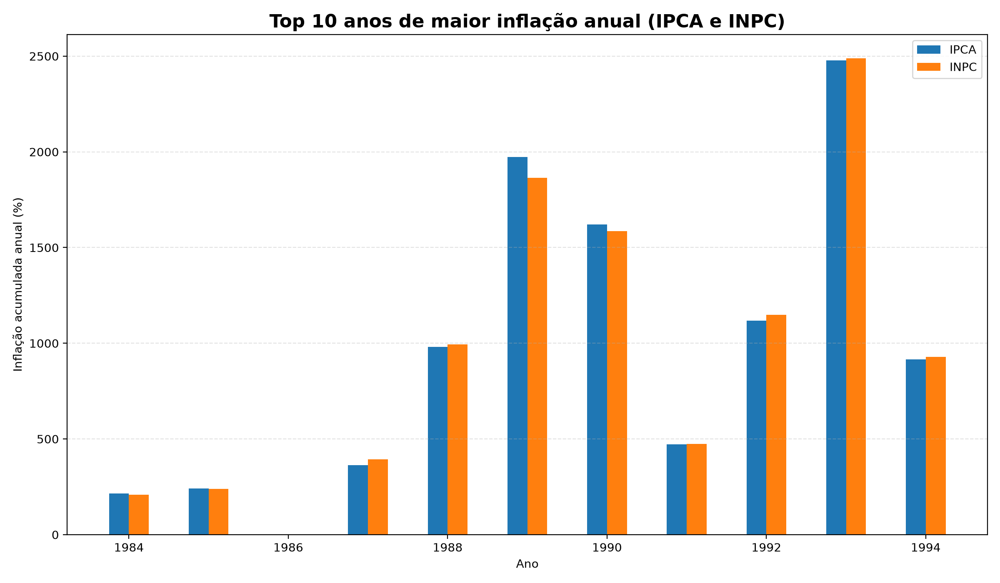
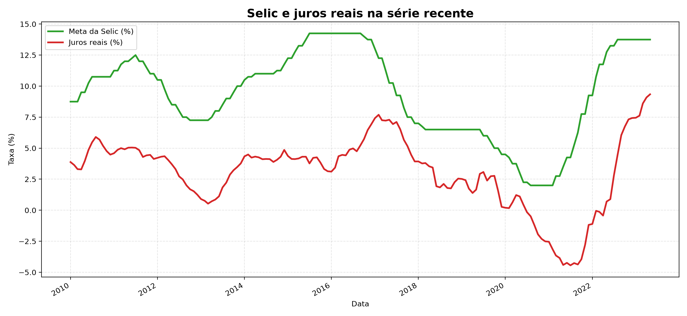

A série mensal do IPCA mostra claramente a diferença entre os ciclos hiperinflacionários dos anos 1980 e início dos 1990 e os períodos de inflação moderada que predominam após 1994. O ponto mais extremo da curva foi em 1990-03, quando a variação mensal chegou a 82.39%. Esse salto evidência como a política de estabilização e o regime de metas inflacionárias transformaram o comportamento da inflação no país.
2) IPCA e INPC acumulados em 12 meses

A comparação entre IPCA e INPC em 12 meses revela como a inflação de consumo se comportou ao longo do tempo, especialmente nos ciclos de alta e de queda. O pico mais elevado do acumulado em 12 meses foi em 1990-04, com 6821.31%. O gráfico também mostra que o período recente, especialmente 2021-2022, teve escalada de preços acima do habitual, mas muito menos extrema do que as fases hiperinflacionárias históricas.
3) Top 10 anos de maior inflação anual

Nos anos mais severos, o IPCA anual foi muito acima da média histórica. O maior nível anual observado foi 2477.15% em 1993. Esse padrão reforça a ideia de que a inflação no Brasil foi marcada por ciclos de aceleração e desalinhamento entre preços, renda e política monetária. O conjunto de 2020 a 2023, por outro lado, mostra um choque de preços mais contido em comparação com os picos da década de 1980 e 1990.
4) Selic e juros reais na série recente

A comparação entre a meta da Selic e os juros reais ajuda a entender a relação entre política monetária e custo do crédito. Quando a taxa nominal está acima da inflação, os juros reais ficam positivos, o que pode desacelerar a demanda e reduzir pressões inflacionárias. Em contraste, quando a taxa real cai para níveis baixos ou negativos, a dinâmica tende a estimular gasto e pode pressionar o nível de preços. A série recente revela justamente esse equilíbrio entre tentativa de controle inflacionário e condições de financiamento.
Conclusão
O conjunto de gráficos indica que a inflação brasileira passou por extremos muito mais severos na segunda metade do século XX do que nos últimos anos. A trajetória do IPCA mensal confirma que o problema histórico não foi pontual, mas estrutural e cíclico. Mesmo assim, os dados mais recentes mostram que a inflação pode voltar a acelerar rapidamente quando há choques de oferta, liquidez ou pressões de custos, por isso a análise temporal continua fundamental para orientar políticas públicas e decisões de mercado.
Em termos agregados, os valores observados em 2020, 2021, 2022 e 2023 foram: 4.52%, 10.06%, 5.79% e 2.95% de variação anual acumulada do IPCA, mostrando que a última fase foi mais moderada, mas ainda relevante.